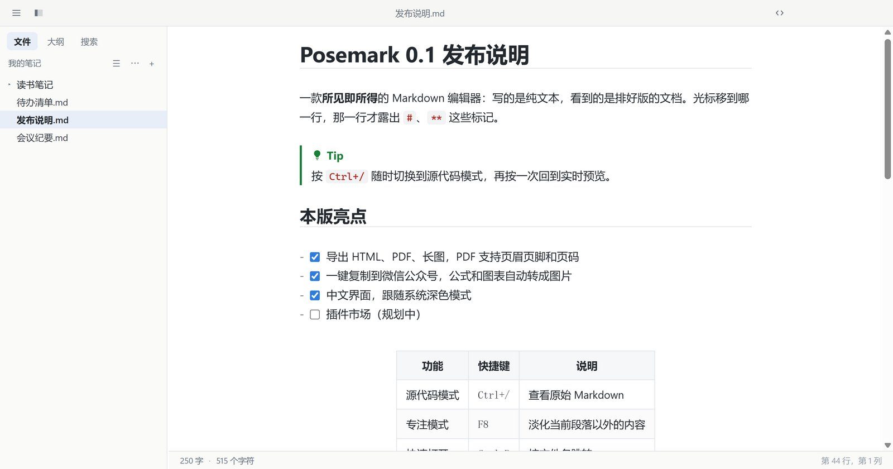
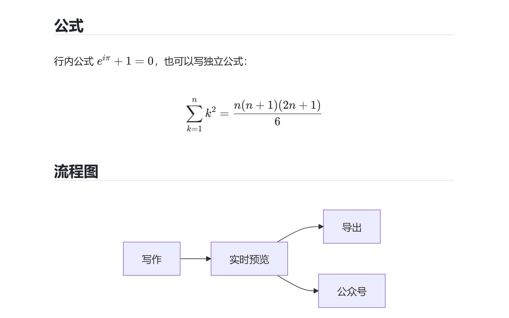
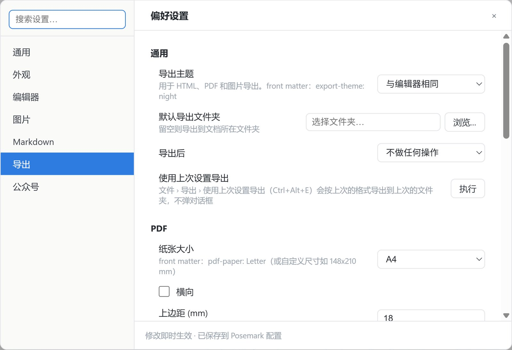
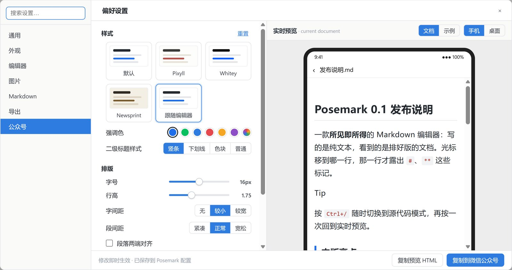
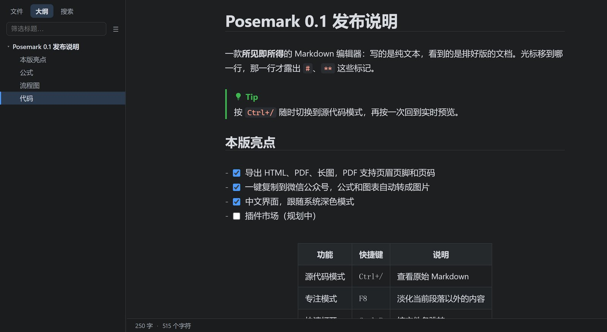

使用文档Documentation
Posemark 是一款所见即所得的 Markdown 编辑器。这份文档介绍它的主要功能和设置。Posemark is a live-preview Markdown editor. This guide walks through its main features and settings.
安装Install
- Windows：推荐从微软商店安装，可自动更新；也可以在 GitHub Releases 下载安装程序（
.exe）或免安装版（.zip）。 - macOS：下载对应芯片的
.dmg，把 Posemark 拖进“应用程序”。目前安装包未做公证，第一次打开时请右键点击应用并选择“打开”。 - Linux：AppImage 加上可执行权限后直接运行；Debian / Ubuntu 可用
sudo apt install ./Posemark-*.deb安装。
Windows 安装程序目前没有代码签名，SmartScreen 提示时点“更多信息 › 仍要运行”即可。
- Windows: the Microsoft Store version updates itself. You can also grab the installer (
.exe) or the portable.zipfrom GitHub Releases. - macOS: download the
.dmgfor your chip and drag Posemark into Applications. The build is not notarized yet, so the first time right-click the app and choose Open. - Linux: make the AppImage executable and run it, or install the deb with
sudo apt install ./Posemark-*.deb.
The Windows installer is not code-signed yet; when SmartScreen warns, choose More info › Run anyway.
快速上手Getting started
用 文件 › 打开文件夹（Ctrl+Shift+O）打开你存放笔记的文件夹，左侧就是文件树；双击 .md 文件也会直接用 Posemark 打开。
直接输入 Markdown 即可：输入 # 标题 回车，它立刻就是一个标题。光标所在的那一行会显示原始标记，离开后恢复排版效果。
- Ctrl+/：在实时预览和源代码模式之间切换。
- Ctrl+P：按文件名快速打开；Ctrl+Shift+F：在整个文件夹中搜索。
- 侧边栏有 文件、大纲、搜索 三个面板；Ctrl+Shift+L 显示或隐藏侧边栏。
- 一个窗口编辑一个文档，Ctrl+Shift+N 新建窗口，Ctrl+Tab 在窗口间切换。
Use File › Open Folder (Ctrl+Shift+O) to open the folder that holds your notes; it appears as a file tree on the left. Double-clicking a .md file opens it in Posemark too.
Just type Markdown: # Title plus Enter is a heading straight away. The line your caret is on shows its raw markers; move away and it is typeset again.
- Ctrl+/ switches between live preview and source code mode.
- Ctrl+P opens a file by name; Ctrl+Shift+F searches the whole folder.
- The sidebar has Files, Outline and Search panels; Ctrl+Shift+L shows or hides it.
- One document per window: Ctrl+Shift+N opens another, Ctrl+Tab cycles through them.

编辑Editing
文字与段落
支持加粗、斜体、删除线、==高亮==、H~2~O 下标、X^2^ 上标、行内代码和链接。“段落”和“格式”菜单里的命令都有快捷键，例如 Ctrl+1～6 设置标题级别。
表格
点击表格就进入网格编辑：Tab 到下一格，Enter 到下一行，在最后一格按 Tab 会新增一行。右键单元格可以插入、删除行列，以及设置对齐方式。
代码块
用 ```语言 开始一个代码块，会按语言高亮。光标进入代码块后显示源码，依然保持高亮。
更多语法
- 任务列表
- [ ]，点击复选框即可勾选。 - GitHub 风格提示块：
> [!NOTE]、[!TIP]、[!WARNING]等。 - 单独一行写
[TOC]生成目录；[^1]写脚注；:smile:输入表情。
粘贴
从网页、Word 等处复制的富文本会自动转换成 Markdown；Ctrl+Shift+V 始终粘贴纯文本。
Text and paragraphs
Bold, italic, strikethrough, ==highlight==, H~2~O subscript, X^2^ superscript, inline code and links all work. Everything in the Paragraph and Format menus has a shortcut — Ctrl+1…6 set the heading level, for example.
Tables
Click a table to edit it as a grid: Tab moves to the next cell, Enter to the next row, and Tab in the last cell adds a row. Right-click a cell to insert or delete rows and columns, or to set the alignment.
Code blocks
Start a block with ```language to get highlighting. With the caret inside, you see the source — still highlighted.
More syntax
- Task lists with
- [ ]; click a box to tick it. - GitHub-style alerts:
> [!NOTE],[!TIP],[!WARNING]and friends. [TOC]on its own line builds a table of contents;[^1]adds a footnote;:smile:inserts an emoji.
Pasting
Rich text from web pages, Word and the like is converted to Markdown when you paste; Ctrl+Shift+V always pastes plain text.
图片Images
- 把图片拖进编辑区，或直接粘贴截图，图片会复制到文档旁的
assets/文件夹，并插入。 - 点击图片出现缩放框，拖动右下角调整大小，宽度会写成
。 - 右键图片可以打开、复制、调整缩放比例、移动到其他文件夹、下载网络图片或上传到图床。
- 在 偏好设置 › 图片 里可以改插入方式（复制 / 保留原路径 / 直接上传）、图片文件夹，以及配置 PicGo-Core、PicList 或自定义命令作为上传服务。
- front matter 中的
typora-copy-images-to和typora-root-url与 Typora 兼容。
- Drop an image onto the editor, or paste a screenshot: the file is copied into an
assets/folder next to the document andis inserted. - Click an image for a resize frame; dragging the corner writes the width as
. - Right-click an image to open, copy, zoom, move it to another folder, download a remote image or upload it.
- Preferences › Images sets the insert policy (copy / keep the path / upload), the image folder, and an uploader: PicGo-Core, PicList or a custom command.
typora-copy-images-toandtypora-root-urlin the front matter work as in Typora.
公式Math
行内公式用 $…$ 或 \(…\)，独立公式用 $$…$$、\[…\] 或 ```math 代码块，由 KaTeX 渲染。Ctrl+Shift+M 插入公式块，编辑时下方实时显示结果。
- 编号：偏好设置 › Markdown › 公式 可选择不编号、AMS 风格或全部编号；
\label{eq:x}加\eqref{eq:x}引用编号。 - 内置 mhchem 化学式
\ce{H2O}，以及 physics 宏包的常用命令（\dv、\abs、\ket等）。
Inline math with $…$ or \(…\); display math with $$…$$, \[…\] or a ```math fence, rendered by KaTeX. Ctrl+Shift+M inserts a math block that shows its result live underneath.
- Numbering: Preferences › Markdown › Math offers none, AMS style or every equation;
\label{eq:x}with\eqref{eq:x}refers to the number. - mhchem (
\ce{H2O}) and the common physics-package commands (\dv,\abs,\ket…) are built in.

图表Diagrams
```mermaid 代码块会绘制成 Mermaid 图表，停止输入片刻后自动重绘，语法错误会显示在预览中而不会覆盖你的文字。```sequence（js-sequence-diagrams）和 ```flow（flowchart.js）语法也能识别。
图表配色跟随编辑器主题，也可以在 偏好设置 › Markdown › 图表 中调整。右键图表可另存为 SVG、PNG 或复制。
A ```mermaid fence is drawn as a Mermaid diagram and redrawn shortly after you stop typing; a syntax error shows in the preview instead of replacing your text. ```sequence (js-sequence-diagrams) and ```flow (flowchart.js) syntax work too.
Diagrams follow the editor theme, with options in Preferences › Markdown › Diagrams. Right-click a diagram to save it as SVG or PNG, or copy it.
```mermaid
flowchart LR
A[Write] --> B[Preview] --> C[Export]
```导出Export
文件 › 导出 中可选：
- HTML：单个自包含文件，主题样式、公式字体、图表都内嵌在内，可选附带可折叠大纲。
- HTML（无样式）：只有 HTML 标记，方便粘贴到其他网站或模板。
- PDF：可设置纸张（A3/A4/A5/B5/Letter 等或自定义尺寸）、横向、边距、页眉页脚、一级标题前分页。
- 图片 (PNG)：整篇文档渲染为一张长图，宽度可调。
- 使用上次设置导出（Ctrl+Alt+E）：按上次的格式直接导出到上次的文件夹，不弹对话框。
页眉页脚用 左 | 中 | 右 分成三栏，可使用变量：${title}、${author}、${today}、${pageNo}、${pageCount}，以及 front matter 中的任意键。例如页脚 ${title} | | ${pageNo} / ${pageCount}。
front matter 里的 title、author、description、keywords 会写入 PDF 的文档属性。导出主题、默认导出文件夹、导出后是否打开文件都在 偏好设置 › 导出 中设置。
File › Export offers:
- HTML: one self-contained file with the theme, math fonts and diagrams inlined, optionally with a collapsible outline.
- HTML (without styles): bare markup, for pasting into another site or template.
- PDF: paper size (A3/A4/A5/B5/Letter… or a custom size), landscape, margins, header and footer, a page break before every level-1 heading.
- Image (PNG): the whole document as one long picture at an adjustable width.
- Export with Previous (Ctrl+Alt+E): the last format into the last folder, no dialog.
Headers and footers split into left | center | right and accept ${title}, ${author}, ${today}, ${pageNo}, ${pageCount} and any front matter key — e.g. a footer of ${title} | | ${pageNo} / ${pageCount}.
title, author, description and keywords from the front matter go into the PDF's document properties. The export theme, default folder and what happens after exporting live in Preferences › Export.

front matter 设置Front matter settings
在文档开头的 YAML front matter 中写下这些键，可以只针对这一篇文档覆盖导出设置：These keys in a document's YAML front matter override the export settings for that document only:
---
title: 季度报告
author: 张三
keywords: [报告, 2026]
pdf-paper: Letter
pdf-margin: 20 15
pdf-footer: ${title} | | ${pageNo} / ${pageCount}
pdf-h1-page-break: true
html-outline: true
---| 键Key | 作用Effect |
|---|---|
export-theme | 导出使用的主题，如 nightTheme for the export, e.g. night |
pdf-paper | 纸张：A4、Letter 或 148x210 mmPaper: A4, Letter or 148x210 mm |
pdf-landscape | 横向：true / falseLandscape: true / false |
pdf-margin | 边距（mm），写法同 CSS：20、20 15、上 右 下 左；也可用 pdf-margin-top 等单独设置Margins in mm, CSS-style: 20, 20 15, top right bottom left; or pdf-margin-top etc. |
pdf-header / pdf-footer | 页眉 / 页脚Header / footer |
pdf-h1-page-break | 一级标题前分页Page break before level-1 headings |
html-outline | HTML 附带可折叠大纲Collapsible outline in the HTML |
html-head / html-body | 追加到 <head> / <body> 的 HTML，支持 | 多行写法HTML appended to <head> / <body>; | block scalars work |
image-width | 导出长图的宽度（px）Width of the PNG export (px) |
复制到公众号Copy for WeChat
公众号编辑器会丢弃所有样式表，普通复制粘贴过去只剩光秃秃的文字。文件 › 导出 › 复制到微信公众号（Ctrl+Alt+C）会把排版写成行内样式放进剪贴板，直接粘贴到公众号后台即可：
- 代码保留高亮颜色，表格带边框和表头底色。
- 本地图片内嵌进内容；公式和 Mermaid 图表自动转成图片。
- 公众号里链接不能点击，所以每个链接会加上编号，并在文末列出“参考链接”。
在 偏好设置 › 公众号 中可以调整配色、强调色、二级标题样式、字号、行高、字间距、段间距、首行缩进等，右侧实时预览粘贴后的效果。
WeChat's article editor throws away every stylesheet, so an ordinary copy arrives as bare text. File › Export › Copy for WeChat (Ctrl+Alt+C) puts the formatting on the clipboard as inline styles — paste it straight into the editor:
- Code keeps its highlight colours; tables get borders and a shaded header.
- Local images are embedded; formulas and Mermaid diagrams become images.
- Links cannot be clicked in WeChat, so each gets a number and the URLs are listed at the end.
Preferences › WeChat tunes the colour theme, accent colour, heading style, font size, line height, spacing and first-line indent, with a live preview of the pasted result.

主题与自定义 CSSThemes and custom CSS
内置 Default、Night、Pixyll、Whitey、Newsprint 五套主题，在“主题”菜单中切换。偏好设置 › 外观 中开启“跟随系统深色模式”后，可以分别指定浅色和深色主题。
主题 › 打开主题文件夹 可以放入自己的样式：
base.user.css：追加到所有主题；<主题名>.user.css：只追加到该主题，如night.user.css；- 完整的
<名字>.css会作为新主题出现在菜单中（文件开头写/* dark */标记为深色主题）。
Default, Night, Pixyll, Whitey and Newsprint ship built in; switch from the Themes menu. With Preferences › Appearance › Follow the system dark mode you choose one theme for light mode and one for dark.
Themes › Open Theme Folder takes your own styles:
base.user.cssis added to every theme;<theme>.user.cssto that theme only, e.g.night.user.css;- a whole
<name>.cssbecomes a theme of its own (start it with/* dark */to mark it dark).

设置与草稿Settings and drafts
- 界面语言：偏好设置 › 通用 › 语言，可选跟随系统、English 或简体中文，切换后立即生效。
- 自动保存：偏好设置 › 通用 › 保存。
- 未保存草稿：有未保存修改时内容会自动备份，意外关闭或断电后，用 文件 › 恢复未保存的草稿 找回。
- 启动行为：新建空白文档、恢复上次的文件夹、恢复上次的文件，或打开固定文件夹。
- 智能标点、自动补全括号与 Markdown 符号、拼写检查等都可以在 偏好设置 › 编辑器 中开关。
- Interface language: Preferences › General › Language — follow the system, English or Simplified Chinese; switching applies at once.
- Auto save: Preferences › General › Saving.
- Unsaved drafts: unsaved edits are backed up as you type; after a crash or power cut, File › Recover Unsaved Drafts brings them back.
- On launch: a new document, the last folder, the last file, or a fixed folder.
- Smart punctuation, auto-pairing of brackets and Markdown markers, and spell check are switches in Preferences › Editor.
快捷键Shortcuts
macOS 上用 ⌘ 代替 Ctrl。On macOS, use ⌘ instead of Ctrl.
| 操作Action | 快捷键Keys |
|---|---|
| 新建 / 打开 / 保存 / 另存为New / Open / Save / Save As | Ctrl+N Ctrl+O Ctrl+S Ctrl+Shift+S |
| 新建窗口 / 切换窗口New window / Next window | Ctrl+Shift+N Ctrl+Tab |
| 快速打开Quick open | Ctrl+P |
| 查找 / 替换 / 在文件夹中查找Find / Replace / Find in folder | Ctrl+F Ctrl+H Ctrl+Shift+F |
| 源代码模式Source code mode | Ctrl+/ |
| 专注模式 / 打字机模式Focus / Typewriter mode | F8 F9 |
| 一至六级标题 / 正文Heading 1–6 / Paragraph | Ctrl+1…6 Ctrl+0 |
| 加粗 / 斜体 / 行内代码 / 高亮Bold / Italic / Code / Highlight | Ctrl+B Ctrl+I Ctrl+Shift+` Ctrl+Shift+H |
| 链接 / 图片Link / Image | Ctrl+K Ctrl+Shift+I |
| 表格 / 公式块Table / Math block | Ctrl+T Ctrl+Shift+M |
| 侧边栏 / 大纲 / 搜索 / 文件Sidebar / Outline / Search / Files | Ctrl+Shift+L Ctrl+Shift+1 Ctrl+Shift+2 Ctrl+Shift+3 |
| 字数统计Word count | Ctrl+Shift+W |
| 粘贴为纯文本Paste as plain text | Ctrl+Shift+V |
| 复制到公众号 / 使用上次设置导出Copy for WeChat / Export with Previous | Ctrl+Alt+C Ctrl+Alt+E |
常见问题FAQ
Posemark 会上传我的文档吗？
不会。Posemark 没有账号、没有遥测，文档只保存在你自己的电脑上。只有在你配置了图床上传、或文档里引用了网络图片时才会联网，详见隐私政策。
和 Typora 的文件兼容吗？
兼容。Posemark 读写的都是普通 Markdown 文件，也识别 Typora 的 typora-copy-images-to、typora-root-url、图片缩放写法和 [TOC]。
遇到问题怎么反馈？
请在 GitHub Issues 提交，附上系统版本和复现步骤会很有帮助。
Does Posemark upload my documents?
No. There is no account and no telemetry; your documents stay on your computer. The app only goes online for images your document links to, or for uploads you set up yourself — see the privacy policy.
Is it compatible with Typora files?
Yes. Posemark reads and writes plain Markdown and understands Typora's typora-copy-images-to, typora-root-url, image sizing and [TOC].
Where do I report a problem?
Open an issue on GitHub; your OS version and the steps to reproduce help a lot.